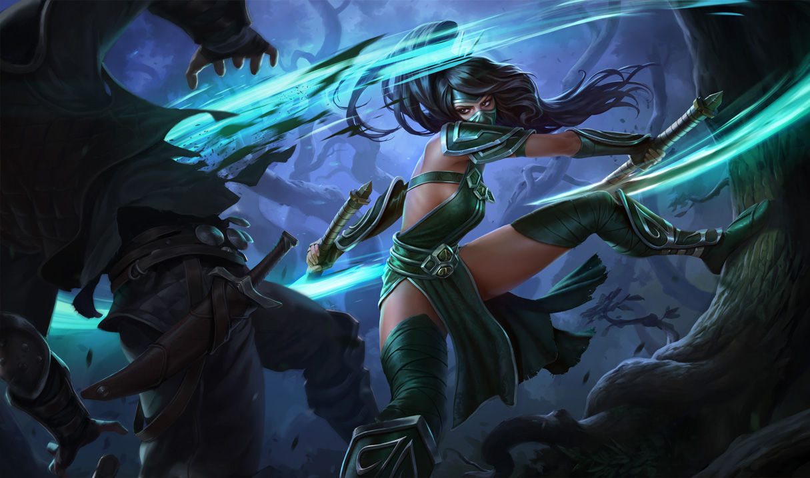
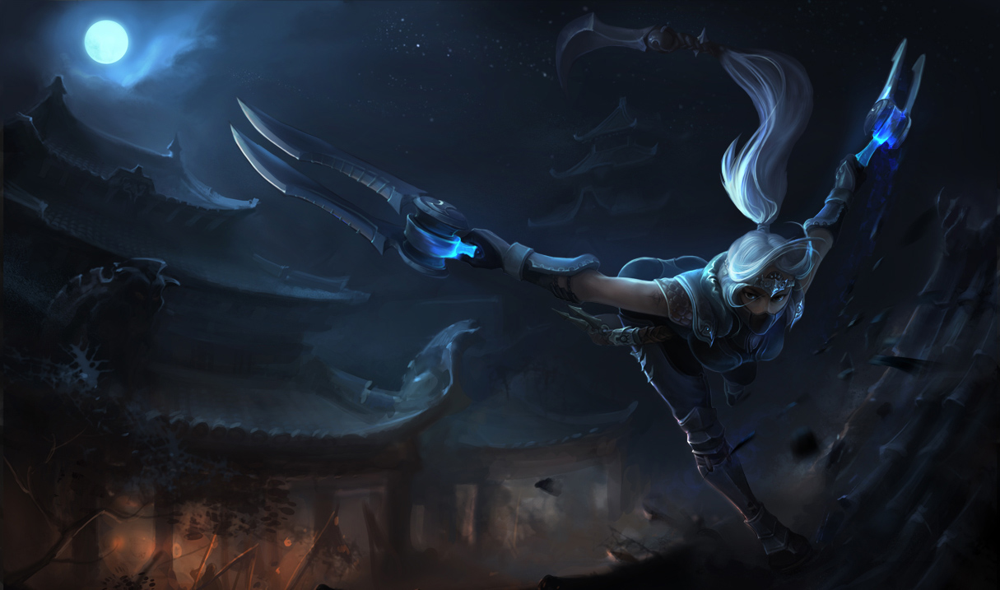
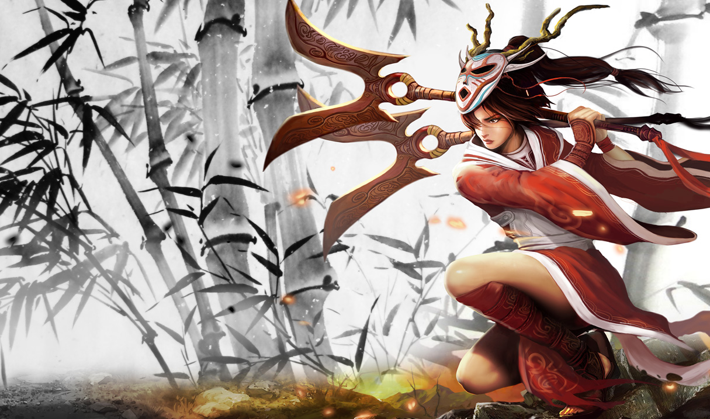
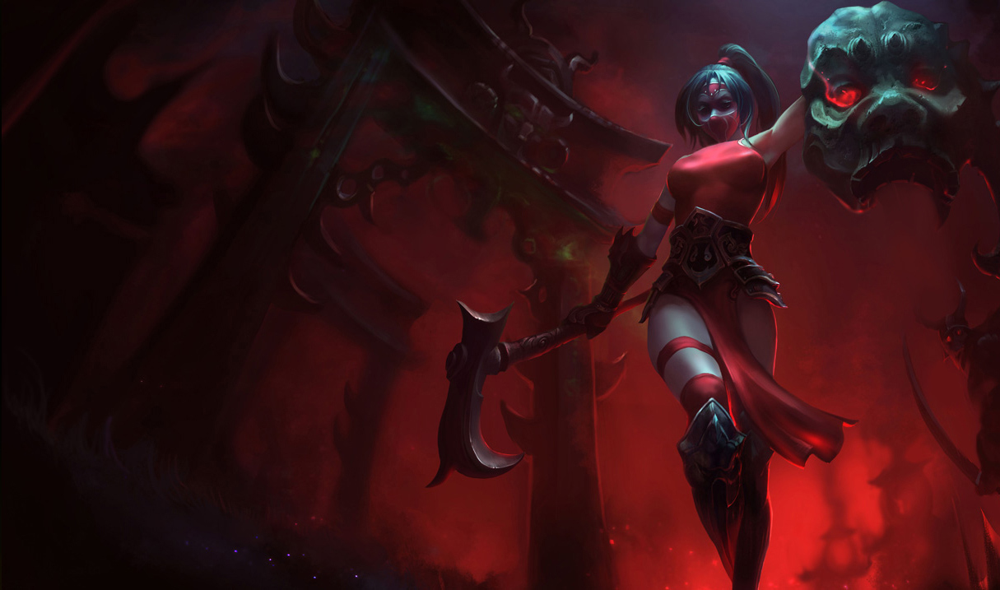
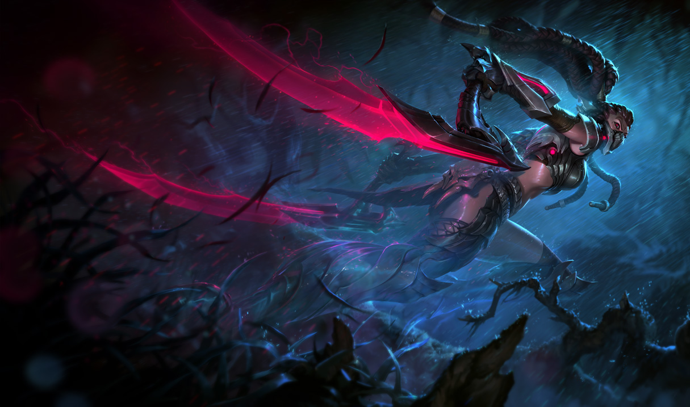

Akali's first two attacks are empowered. The first strike heals her, and the second strike deals bonus magic damage. Twin Disciplines will recharge itself automatically a short while after being used.

Akali
the Fist of Shadow
Ionia
Health:
587.8 (+85 per level)
Energy:
200
Attack damage:
58.376 (+3.2 per level)
Attack speed:
0.694 (+3.1% per level)
Movement speed:
350
Health Regen:
8.34 (+0.65 per level)
Energy Regen:
50
Armor:
26.38 (+3.5 per level)
Magic Resist:
32.1 (+1.25 per level)
There exists an ancient order originating in the Ionian Isles dedicated to the preservation of balance. Order, chaos, light, darkness -- all things must exist in perfect harmony for such is the way of the universe. This order is known as the Kinkou ...
Read moreAbilities


Skins





Abilities
Twin Disciplines
Mark of the Assassin
Cost:
60 Energy
Range:
600
Akali spins her kama at a target enemy to deal Magic Damage and mark the target for 6 seconds. Akali's melee attacks against a marked target will trigger and consume the mark to cause additional damage and restore Energy.
Akali throws her kama at a target enemy to deal 35/55/75/95/115 (+40% Ability Power) magic damage and mark the target for 6 seconds.Akali's melee attacks against a marked target will consume the mark to deal 45/70/95/120/145 (+50% Ability Power) magic damage and restore 40 energy.
Twilight Shroud
Cost:
80/75/70/65/60 Energy
Range:
270
Akali teleports to a nearby location, leaving a cover of smoke at her previous location. While inside the shroud, Akali becomes Invisible and gains Movement Speed. Attacking or using abilities will briefly reveal her. Enemies inside the smoke have their Movement Speed reduced.
Akali teleports to a nearby location, leaving a cover of smoke at her previous location that lasts for 8 seconds and slows enemies within its area by 14/18/22/26/30%.While inside the shroud Akali gains Invisibility and 20/40/60/80/100% movement speed. Attacking or using abilities briefly removes Invisibility. Stealth - Invisible: Akali can only be revealed by nearby enemy Turrets.
Crescent Slash
Cost:
60/55/50/45/40 Energy
Range:
325
Akali flourishes her kamas, dealing damage based on her bonus Attack Damage and Ability Power. When Crescent Slash kills a unit, it has a shorter cooldown.
Akali flourishes her kamas, slicing enemies for 70/100/130/160/190 (+70% bonus Attack Damage) (+50% Ability Power) physical damage.If Crescent Slash kills an enemy, its cooldown is refunded by 60%.
Shadow Dance
Cost:
1 Essence of Shadow
Range:
700
Akali moves through shadows to quickly strike through her target, dealing damage and consuming an Essence of Shadow charge. Akali recharges Essence of Shadow charges periodically, max 3 stacks.
Akali quickly strikes through her target, dealing 50/100/150 (+25% Ability Power) magic damage.Akali stores an Essence of Shadow on kills and assists as well as every 30/22.5/15 seconds up to 3 total.
There exists an ancient order originating in the Ionian Isles dedicated to the preservation of balance. Order, chaos, light, darkness -- all things must exist in perfect harmony for such is the way of the universe. This order is known as the Kinkou and it employs a triumvirate of shadow warriors to uphold its causes in the world. Akali is one of these shadow warriors, entrusted with the sacred duty of Pruning the Tree - eliminating those who threaten the equilibrium of Valoran.
A prodigal martial artist, Akali began training with her mother as soon as she could make a fist. Her mother's discipline was relentless and unforgiving, but predicated on the fundamental principle: ''We do that which must be done.'' When the Kinkou inducted her into the order at the age of fourteen, she could slice a dangling chain with a chop of her hand. There was no question - she would succeed her mother as the Fist of Shadow. She has had to do much in this role which others might find morally questionable, but to her it is in service of her mother's inviolable doctrine. She now works with her fellows Shen and Kennen to enforce the balance of Valoran. This hallowed pursuit has unsurprisingly led the triumvirate to the Fields of Justice.
''The Fist of Shadow strikes from the cover of death itself. Do not impede the balance.''
A prodigal martial artist, Akali began training with her mother as soon as she could make a fist. Her mother's discipline was relentless and unforgiving, but predicated on the fundamental principle: ''We do that which must be done.'' When the Kinkou inducted her into the order at the age of fourteen, she could slice a dangling chain with a chop of her hand. There was no question - she would succeed her mother as the Fist of Shadow. She has had to do much in this role which others might find morally questionable, but to her it is in service of her mother's inviolable doctrine. She now works with her fellows Shen and Kennen to enforce the balance of Valoran. This hallowed pursuit has unsurprisingly led the triumvirate to the Fields of Justice.
''The Fist of Shadow strikes from the cover of death itself. Do not impede the balance.''
Friends
-
 Shen
Shen -
 Kennen
Kennen
Rivals
-
 Zed
Zed